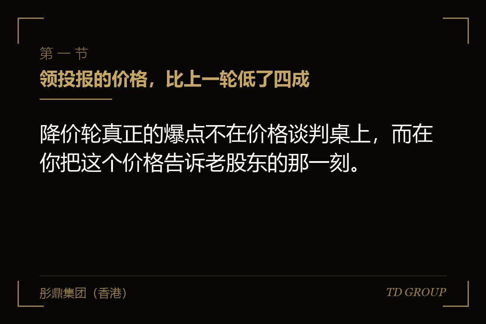
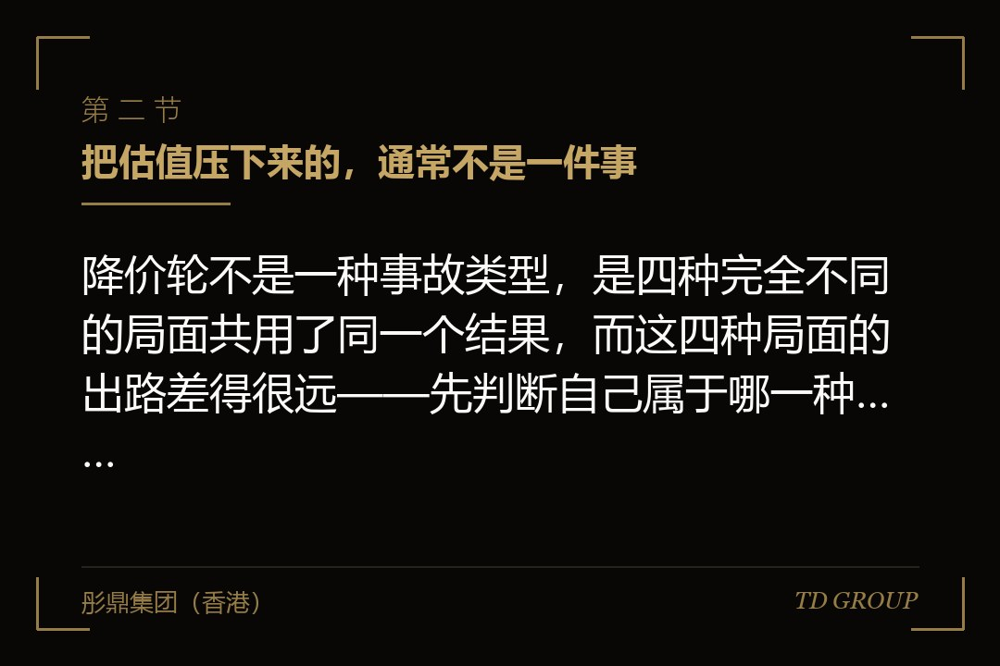
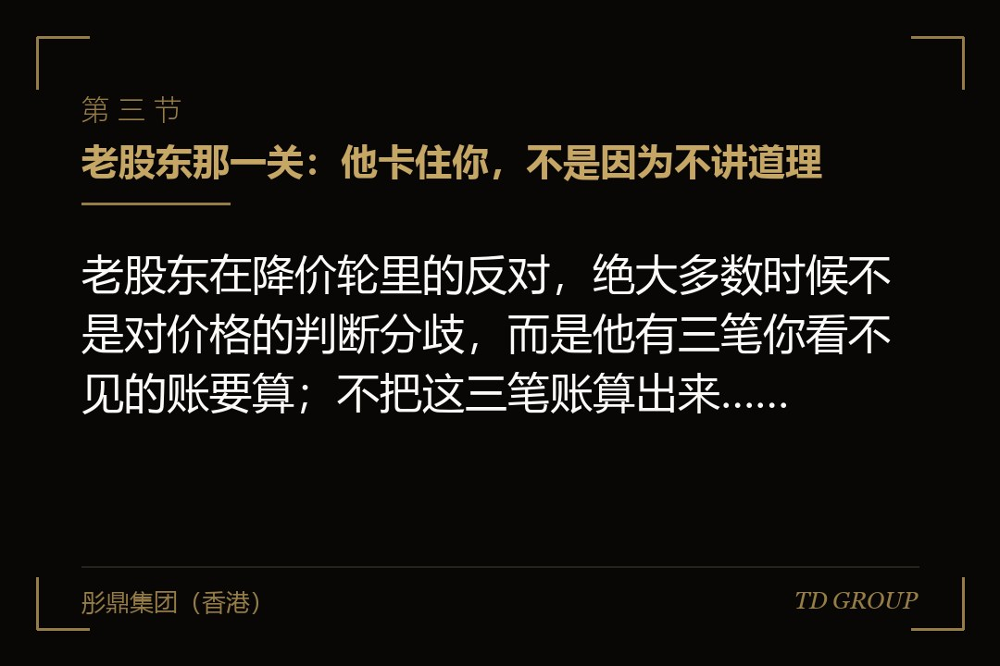

一、领投报的价格，比上一轮低了四成

结论先行：降价轮真正的爆点不在价格谈判桌上，而在你把这个价格告诉老股东的那一刻。一家做工业机器视觉检测设备的企业，两年前那一轮的定价是每股十二元，这一次领投机构给的报价是每股七元。创始人自己其实已经想通了——在手订单的结构变了，回款周期拉长了两个多月，同类企业的定价基准也确实整体下来了。他花了两个月把领投谈到这个数，条款清单眼看就要签，才在一次电话里把价格告诉了两位老股东。
其中一位当场说了一句：这个价我不签字。
接下来的四周，这家企业没有跟新投资人谈一个字，全部时间花在老股东身上。那位不肯签字的股东，反对的其实不是七元这个数——他两周后在另一个场合承认，按现在的经营情况，七元不算离谱。他反对的是这件事发生在这个季度：他所在的基金正处在向自己的出资人做年度汇报的窗口里，这一笔一旦按七元过账，他要在报告里写下一次下调，而这份报告会被他正在接触的下一期基金的潜在出资人看到。他要的不是更高的价格，是更晚的时点。
这四周里发生的另外两件事，创始人事先一件都没算到。头一件是反稀释：上一轮的协议里有一条转换价格调整，按七元发行会触发它，老股东的持股比例往上走，而走上去的那部分是从创始人和员工期权池里划出来的，新投资人一分不出。
第二件是期权：公司在上一轮之后给二十多位核心员工授过期权，行权价按当时的价格定，现在的每股价格低于那个行权价，这批期权在员工眼里已经是废纸——而人力资源负责人是在员工私下议论了两周之后，才把这件事报上来的。
这里要先把两条边界讲死，免得后面越讲越乱。其一，本文讲的是同一家公司这一轮低于上一轮，是一家企业在自己的融资历史上的纵向价格倒退；它和一级市场定价与二级市场交易价格之间的价差不是一回事，那是另一个问题，此处不展开。
其二，反稀释条款本身该怎么写——用加权平均还是完全棘轮、公式里的分子分母怎么取、哪些发行属于例外事项、例外清单要列到什么颗粒度——那是签上一轮协议时的功课，条款的写法本身此处不展开；本文讲的是这条已经写好的条款被触发的那一天，股权表上到底发生了什么，以及在那一天到来之前，企业方还能做什么。
另外几条相邻事项本文一律不展开：过渡期的短期资金安排、对赌指标被触发之后的处理、没有收入没有利润的企业头一次定价怎么谈，都是另外的话题。
因此，降价轮的正确起手不是去跟新投资人磨价格，而是先回头把自己这一侧的三张表算清楚：老股东手里有哪些能卡住这次增资的权利、反稀释按现有条款触发之后股权表长什么样、员工期权在新价格下还剩多少实际价值。这三件事在你签条款清单之前算，是准备；在签之后算，是事故。
二、把估值压下来的，通常不是一件事

结论先行：降价轮不是一种事故类型，是四种完全不同的局面共用了同一个结果，而这四种局面的出路差得很远——先判断自己属于哪一种，比急着去找新投资人重要得多。
其一是上一轮的定价本身就透支了。一家做连锁口腔医疗服务的企业，上一轮的估值是按"两年内门店数量再翻一番、单店回本周期维持原水平"这两个假设定的。实际情况是两年只开了不到计划一半的门店，新开的几家单店回本周期还比老店长了将近一年——选址成本和医生成本都变了。
这种局面下的降价不是企业变差了，是上一轮把未来两年的成绩提前算进了价格里，现在只是回到该在的位置。判断依据很简单：把上一轮定价时用的那份预测拿出来逐项对一遍实际完成情况，差距集中在那几条最乐观的假设上，就是这一类。
其二是行业的定价基准整体下移。同样的经营数据，两年前和现在拿到的价格不一样，因为可比公司的定价参照变了，投资机构内部的出手标准也变了。这一类的特征是：你的经营指标没有退步，甚至还在增长，但所有接触过的投资人给出的价格区间高度一致地低于上一轮。这种情况下，企业方最容易犯的错误是把它当成"这些投资人不懂我们"，于是一家家换着谈，谈了半年发现价格没有变，而现金却少了半年。
其三是企业自身出了硬伤。核心客户流失、关键资质到期未续、一起没披露的诉讼、一位关键技术人员带着团队离开、一条产线的良率长期上不去。这一类的降价其实是有解的，因为它指向一件具体的事，而具体的事有修复路径与修复周期。真正的问题是企业方往往不承认它是硬伤，于是在谈判里反复解释"这是暂时的"，而投资人要的不是解释，是修复计划和验证节点。
其四是钱要得急。这一类最常见，也最没有回旋余地：账上的钱只够撑几个月，工资和供应商货款排在前面，这时候任何一份报价都自带一个隐含条件——你没有时间去比价。一家企业只要走到"这个月不签下一轮就发不出下个月工资"的位置，它的估值就已经不是谈出来的了。
这四类里，头三类的对策都是把事情讲清楚、把修复计划摆出来、必要时接受一个合理的价格调整；第四类完全不同，它的核心是先把时间买回来——缩减开支、做一笔小额的过渡性安排、把某项资产或某条业务线单独处理掉、让老股东先垫一笔，都算。一旦时间被买回来一个季度，你在价格上就重新有了立场，而在没有时间的时候，谈判技巧是不起作用的。
因此，坐上谈判桌之前先做一次自我归类。写下三行字：上一轮定价时用的关键假设、这两年实际完成的情况、以及账上的钱按现在的支出速度还能撑几个月。这三行字决定了你这一场谈的是价格，还是只是在谈条件。
三、老股东那一关：他卡住你，不是因为不讲道理

结论先行：老股东在降价轮里的反对，绝大多数时候不是对价格的判断分歧，而是他有三笔你看不见的账要算；不把这三笔账算出来，你跟他谈价格是谈不动的。
头一笔是账面与交代。机构投资人手里的持股要按一定规则做估值，新一轮的发行价格是最硬的参照。一旦这一轮按低于上一轮的价格完成，他手里这一笔就要往下调，而这个下调会出现在他向自己出资人提交的报告里。
一家做生鲜冷链仓储的企业遇到的就是这个局面：老股东是一支临近退出期的基金，管理人当时正在为下一期基金做路演，他跟创始人说得很坦白——你这个价格我认，但我不能在这三个月里认。最后双方把交割拆成两段，价格没变，时点往后挪了一个季度，事情就过去了。如果创始人把这理解成"他在压我价"，这一轮很可能就崩在这里。
第二笔是他上一轮谈到的那些权利。老股东手里通常有一组特别权利：优先清算、反稀释、董事席位或观察员席位、对特定事项的同意权、按比例参与下一轮的权利、信息获取的频率与颗粒度。这些权利在新一轮里往往要重排——新投资人一般会要求自己排在最前面，或者至少与老股东同一顺位。也就是说，老股东在这一轮里失去的不只是估值，还可能包括他两年前辛苦谈来的位置。他在谈判里表现出来的强硬，很多时候是在保这个，不是在保价格。
第三笔是博弈本身。如果他手里握着反稀释，那么这一轮按低价发行，他的持股比例会自动上升——从这个角度说，降价对他并不全是坏事。但如果同一份协议里还有付费参与的约定，即他要享受这个保护就必须按比例掏出这一轮的钱，那他就必须真的做一个决定：出钱，还是放弃保护。很多老股东的犹豫，本质上是他还没决定要不要在这家公司上继续投入，而在他做出决定之前，拖着是他成本最低的选择。
老股东手里究竟有什么能真正卡住这次增资，值得逐项确认。其一是表决：增资通常需要股东会按章程规定的比例通过，如果他的持股足以构成阻却，或者章程对增资约定了更高的表决门槛，他不投票这件事本身就能停住流程。
其二是同意权：上一轮的协议里，"以低于本轮价格发行新股"这类事项常常被单列为需要经他事前同意的事项——这条比表决比例更致命，因为它与持股多少无关。其三是签字：即便表决能过，工商变更、章程修订、协议签署仍然需要一系列签名，任何一份拿不到，交割就停在那里。
同意权清单一般怎么设、哪些该争哪些可以放，另有专文，此处只需知道它在降价轮里是最先被引爆的一条。
因此，谈判顺序应该反过来。多数创始人的做法是先谈拢新投资人，拿着一份接近定稿的条款清单去跟老股东"通报"，结果是把自己放在了没有退路的位置上——新投资人已经投入了时间，改一个字都要重新过内部流程，而老股东刚刚知道消息，情绪与利益都在最不利的时点上。
正确的做法是在开始接触新投资人之前，先把老股东那一侧摸清楚：谁有同意权、谁的持股足以阻却、谁临近退出期、谁还有余力跟投。这件事花不了两周，但它决定了后面两个月是顺的还是拧的。
四、过老股东那一关：四条现实的出路
结论先行：老股东那一关有四条出路，而选哪一条取决于他卡住你的到底是账面、是权利，还是他自己也没想好——对症了，多数情况在三周之内可以解开。
其一，请他自己出钱，领投或者跟投一部分。
这条看着最难，实际上最省事，因为它一次解决了他的三笔账：他继续出钱，等于用真金白银为这个价格背书，账面下调这件事在他向出资人解释时就有了完整的叙述；他继续在这一轮里占位置，权利重排时他也就还在桌上；而他一旦决定出钱，前面所有的犹豫都自动结束。
实务里常见的做法是给老股东一个明确的窗口——比如三到四周——在窗口内按与新投资人相同的价格和条件参与，窗口之后再谈就按新条件走。这个窗口本身就是压力，而且是合理的、可以摆在明面上的压力。
其二，不改价格，给他一个别的补偿。价格要写进所有文件，一旦为某位老股东单独调整，新投资人会立刻要求同等待遇，整轮就散了。
但价格之外可以谈的东西很多：延长他某项权利的有效期、把他的清算顺位保住而不是被新投资人压下去、给他一个董事会观察员席位、在交割结构上给他一段更宽的时间、或者在下一轮里给他一个更明确的按比例参与安排。这些对企业方的即期成本远低于改价格，而对他常常够用——他真正要保的是那一侧的交代和位置。
其三，在结构上绕过去。
把这一轮拆成两次交割，先按新价格进一部分钱解决现金流，剩下的留一个窗口；或者用一笔过渡性安排把时间买到下个季度，让老股东的账面问题跨过那个时点（这类工具怎么设计另有专文，此处不展开）；再或者，让确实想走的老股东通过老股转让退出，由新投资人或第三方接手，这样他既不必在账面上认这个下调，也不再是这一轮的障碍。
一家做半导体封装材料的企业用的就是拆两段加窗口的组合：先按新价格进了这一轮总额的三分之一，把工资和一批设备尾款结掉，同时给两位老股东三个月的决策窗口，并写明窗口内按同一价格和同一条件参与。三个月后，其中一位跟了一小笔，另一位放弃保护但签了字——两个都算过关。
华尔街彤鼎俱乐部里，企业主在这一条上问得最多的是"窗口给多长"，经验上的答案是：短到让他必须做决定，长到让他能走完自己内部的流程。
其四，硬走。按章程和协议规定的表决比例通过，接受可能的争议与关系损失。这条不是不能选，但要先把两件事算清楚：算法律上能不能真的走通——如果那条同意权确实覆盖了本次发行，硬走的结果不是快，是诉讼；算关系上值不值——这位老股东可能是你下一轮的介绍人，也可能是你的重要客户或者供应商的股东。实务中真正适合硬走的，多数是持股很小、失联或者长期不配合的历史股东，而不是有实质影响力的机构。
无论走哪一条，有一个动作是共同的：给老股东一份书面的说明，把这一轮为什么是这个价格、钱到账之后先做哪几件事、做完之后公司会处在什么位置、以及他这一侧的权利会怎么安排，写成三到五页纸交给他。这份东西的作用不是说服，是让他能把它转发给他内部的投资决策委员会——他要向别人交代，你不给他材料，他就只能用"我先看看"来拖。
因此，处理老股东的核心不是谈判技巧，而是把他的约束条件当成一个真实的工程问题来解。他要的是时点、是交代、是位置、是一个能转发出去的文件，这几样东西企业方大多给得起，而且比在价格上退让便宜得多。
五、反稀释被触发那一天，股权表上到底怎么走
结论先行：反稀释调整不是"老股东多拿了一点"，它是一次定向的、由创始人与员工期权池单方承担的比例转移，而承担的多少完全取决于上一轮签的是哪一档——同样的降价幅度，两档之间的结果可以差出一个控制权。
先把边界说清楚：条款的写法本身此处不展开。加权平均的公式怎么取、按窄口径还是宽口径算、例外事项清单怎么列、哪些发行不触发调整，这些是签上一轮协议时的谈判内容，另有专文。这一节只讲一件事——那条已经签好的条款，在这一轮触发之后，股权表上实际怎么走。
加权平均那一档的走法是"部分调整"。老股东的转换价格不是直接降到新价格，而是按这一轮的发行价格与发行规模，加权算出一个介于旧价格和新价格之间的数。
这里有一个多数创始人搞反的地方：这一轮进来的钱越多、价格越低，调整的幅度越大；如果这一轮只进来很小一笔钱，即便价格很低，加权之后的调整也相当有限。
所以在加权平均这一档下，企业方在谈判里有一个真实的可调空间——本轮的规模和价格是可以组合的，同样是解决现金流，"低价格进大额"和"低价格进小额加一个后续窗口"，对创始人持股的影响不是一回事。
完全棘轮那一档的走法是"直接归位"。不管这一轮进来的是一百万还是一亿，老股东的转换价格直接降到新的每股价格。一家做职业教育培训的企业栽在这里：它的上一轮协议里是完全棘轮，这一轮因为现金流紧张只进来一笔很小的钱，价格却压得很低。
调整完成之后，老股东的持股比例大幅上升，创始人团队合计从超过半数掉到不足半数，董事会的构成随之改变——公司只拿到了一笔勉强够用的钱，却在同一天失去了控制权。
事后复盘，如果这一轮的规模再大一些，结果反而没有这么难看，因为完全棘轮不看规模，而更大的规模至少能换来更长的经营时间。
第二件必须讲清楚的事：这部分被调走的比例，是从创始人和员工期权池里出的，不是从新投资人那里出的。 新投资人按新价格拿到他那一块，比例是事先算好的；老股东因为转换价格下调而多出来的那一块，只能从剩下的人身上摊。
所以在降价轮的谈判桌上会出现一个很奇怪的现象：老股东和新投资人在这一件事上是站在一边的，而且新投资人往往会顺手要求自己也拿到同一档甚至更强的保护——因为他知道，下一次如果还要降，他不想成为承担的那一方。
由此引出第三件事，也是最容易被忽略的：降价轮的代价是会累积的。 这一轮为了成交答应了一档更狠的保护，下一轮如果再降，触发的调整会比这一次更大，而承担方仍然是创始人和员工。所以在这一轮里把保护档次谈下来——从完全棘轮降到加权平均、加一份合理的例外清单、给调整设一个下限——它的价值不体现在这一轮的股权表上，体现在下一轮。
企业方在这一节里能做的动作有三个。头一个是算：在坐上谈判桌之前，把三种情形下的股权表都算出来——不触发调整、按加权平均调整、按完全棘轮调整，各自算清创始人团队、员工期权池、老股东、新投资人各占多少，控制权在哪一档会翻过去。
这件事必须提前算，因为现场算的结果是你只能听对方报数字。第二个是争付费参与条款：老股东要享受反稀释保护，就必须按比例出这一轮的钱，不出就放弃保护或者转为普通股权。
这一条在降价轮里是企业方手上最有分量的一张牌，因为它把"我什么都不做、还能自动多拿"变成了"我要么掏钱、要么让位"。第三个是把期权池的扩充位置一并谈掉——这件事下一节讲，但它必须和反稀释放在同一张表上算，否则你会为同一次稀释付两次钱。
因此，反稀释在降价轮里的真正性质不是一个条款，是一次账单。账单的金额在上一轮签字的时候就已经定了，你这一轮能做的只剩两件：让它不要再变大，以及让承担它的人不只有你自己。
六、员工手里的期权：行权价高过了新价格之后
结论先行：降价轮之后最先出事的通常不是股权表，是团队——因为员工手里的期权在同一天变成了要花更高的价钱去买更便宜的东西，而这件事没有人会正式通知他们，他们自己会算。
一家做智能家居硬件的企业，上一轮之后给三十多位核心员工授予了期权，行权价参照当时的每股价格设定。这一轮的每股价格低于那个行权价之后，事情的性质就变了：员工要行权，得按当初那个更高的价格掏钱，买到的是现在只值更少的股权。理论上期权还有时间价值，实际上在员工的理解里，它就是零。这家企业的创始人是在两周之后才知道的——研发负责人来谈离职，谈到一半说了一句"反正那个东西现在也没意义了"。
后果有三层，且一层比一层贵。头一层是人：关键岗位在公司最需要稳定的时候动摇，而降价轮本身就意味着接下来一年要靠这批人把业绩做回来。
第二层是谈判：新投资人一定会问团队怎么留，如果你的答案是"期权计划已经覆盖了核心团队"，而对方随手一算就发现这批期权全部处在水下，你在这个问题上的可信度就没了。
第三层是钱：重新安排期权意味着再一次稀释，而这次稀释落在谁头上，取决于它是在这一轮增资之前还是之后计算——这是降价轮谈判里最技术、金额却最大的一个点。
实务上有四种处理方式，各有代价。其一是重新定价：把存量期权的行权价直接改到新价格。它对员工最直接，但要走董事会与股东会的决议流程，可能带来新的会计与税务后果，而且老股东通常会要求同步扩大对他们那一侧的保护作为交换。其二是换发：取消旧的、按新价格重新授予。
它把行权价问题解决得最干净，但通常伴随成熟期重新起算，而这恰恰是员工最不能接受的——已经干满两年，重新起算等于两年白干，处理不好比不换更伤人心。其三是补授：旧的不动，额外再授予一笔，把整体的平均成本拉下来。它最省流程，代价是池子被消耗得更快。
其四是与股权脱钩的留任安排：用一段时间内的现金留任约定把最关键的几个人先锁住，等公司经营重新稳住之后再统一处理股权激励。
选哪一种，看三条：这批期权的成熟进度（成熟得越多，换发的伤害越大）、剩余池子的容量（不够就必须先谈扩池）、以及你要留住的是几个人还是一批人（几个人用留任安排更快，一批人只能动计划本身）。
真正要在这一轮里谈掉的，是扩池的时点。期权池如果在增资之前扩充，稀释由所有老的持股方共同承担，其中主要是创始人；如果在增资之后扩充，新老股东按新的比例一起承担。这两种算法之间的差额，在一次典型的降价轮里往往超过创始人这一轮全部让步的总和。
新投资人几乎一定会要求前置，而这恰恰是可以谈的：可以谈池子的大小（先算清楚未来十八个月真正要用掉多少，而不是接受一个宽松的整数）、可以谈拆成两次（一部分前置、一部分等到达成某个节点再扩）、也可以谈把它与反稀释一并作为一个包来交换。
期权池的一般机制和搭建方式另有专文，此处只讲降价轮特有的这一段。华尔街彤鼎俱乐部里，企业主复盘降价轮时最后悔的一项，往往就是这个前置与后置的差额。
因此，期权重置必须与这一轮同步谈，不能等钱到账之后再单独处理。等到那时，池子的大小已经写进协议、稀释的承担方式已经定了，你再想改，需要重新开一次股东会，而且没有任何筹码可以交换。
七、价格退无可退的时候，还剩什么可以争
结论先行：降价轮里企业方在价格上的议价能力通常确实接近于零，但价格只是这场交易的一个变量，而其余那几个变量对"最终能拿到手多少钱"的影响，常常大于价格本身。
可以争的东西，按经验上的优先级大致是这七样。其一是清算优先的倍数与是否参与分配——它决定了公司将来被并购或者退出时钱怎么分、创始人团队在什么价位之上才真正开始分到钱，详细机制另有专文，但在降价轮里它必须被摆到与价格同等的位置上谈。
其二是付费参与条款，前一节已经讲过。其三是反稀释的档次与例外：从完全棘轮降到加权平均、把员工激励发行与既定的后续安排列入例外、给调整设一个下限。其四是董事会构成与同意权的边界——事项清单每多一条，你日常经营的摩擦就多一分。其五是期权池的位置与大小。
其六是老的特别权利要不要一并重置：降价轮其实是企业方少有的一次机会，把上一轮甚至上上一轮遗留的、当时随手签下的补充协议清理掉，这件事平时几乎没有由头去谈，而这一轮所有人都要重新签一遍文件（这类权利的终止与替换另有专文，此处不展开）。其七是交割的节奏与先决条件：分几次到账、每一次对应什么条件、条件没达成的后果是什么。
一家做环保水处理工程的企业把这套顺序用对了。创始人在价格上一步没退——他也确实没得退，账上的钱只够撑四个月——但他把力气全放在了别处：清算优先从两倍带参与谈到一倍不参与，反稀释从完全棘轮谈到加权平均，并且拿到了付费参与条款。三年后公司被一家产业方并购，按最后成交的对价算，仅清算优先那一项的变动对创始人团队实际拿到手金额的影响，就大于当年那次估值下调本身。这件事签的时候看不出来，要到退出那天才显形。
反面的例子同样值得看。一家做宠物食品的企业，创始人在这一轮里最在意的是"估值不能降"，因为上一轮的价格已经对外说过很多次。
最后他拿到的方案是：估值数字原样保留，但代价是新投资人拿到了两倍的清算优先并参与分配、一份完全棘轮的反稀释、一份很长的事前同意事项清单，以及一个在增资之前扩充的、比实际需要大得多的期权池。
账面上估值没有下调，实际上这家企业的处境比一个干净利落的降价轮差得多——估值只是写在文件里的一个数字，而那几条条款是要在将来每一次分钱、每一次决策、每一次再融资的时候真实兑现的。
为了保住一个说出去好听的数字，把真正决定结果的几项全让了出去，这是降价轮里最常见也最贵的一种误判。
所以降价轮该做的动作，收口成一张清单大致是这几件：先自我归类，用上一轮的定价假设对照实际完成情况，加上账上的钱还能撑几个月，判断你谈的是价格还是只是在谈条件；在接触新投资人之前把老股东那一侧摸清楚，谁有同意权、谁的持股足以阻却、谁临近退出期、谁还有余力出钱；把不触发、加权平均、完全棘轮三种情形下的股权表提前算出来，看控制权在哪一档翻过去；把员工期权的水下情况摸清楚，选定处理方式，并把扩池的时点和大小放进这一轮一起谈；准备一份三到五页、能被老股东转发到他内部去的书面说明；最后把谈判的重心从估值那个数字，移到清算优先、反稀释档次、付费参与、同意权清单和期权池位置这五项上。
彤鼎集团（香港）有限公司在这类事情上承担的是统筹与陪同角色：与企业方一起把老股东的权利清单与约束条件、三种情形下的股权表、期权重置的方案与成本、以及这一轮条款的取舍顺序，梳理成一套可以拿到桌上去谈的东西，并协助企业判断先谈谁、什么时候摊牌、哪一条可以让、哪一条一让就再也拿不回来。
涉及审计、法律意见、税务处理与证券发行等持牌业务的，一律由具备相应资质的合作机构承做。以上均为市场经验性表述，实际结果受行业、交易结构与各方谈判地位影响，不构成固定标准。
本质上，降价轮考的从来不是你能不能把价格谈回去——多数时候不能——而是在价格已经定了的那一局里，你有没有提前算清楚每一条条款将来会在谁身上兑现。关键在于，这些账全都可以在坐上桌之前算完，而坐上桌之后再算，你就只剩下听对方报数字这一件事可做了。